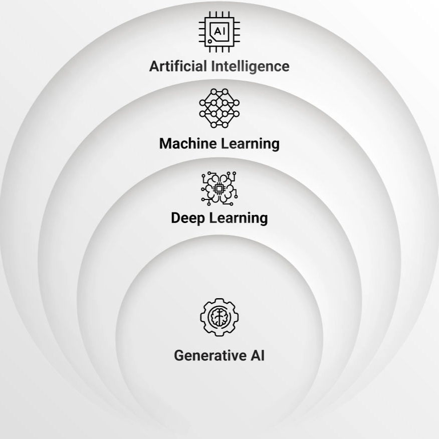
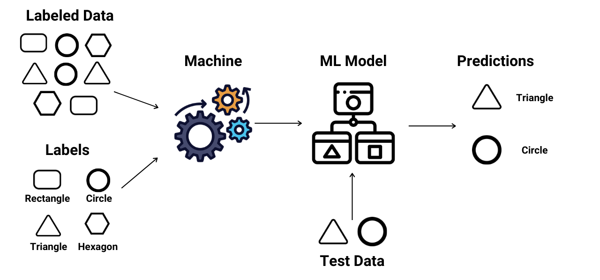
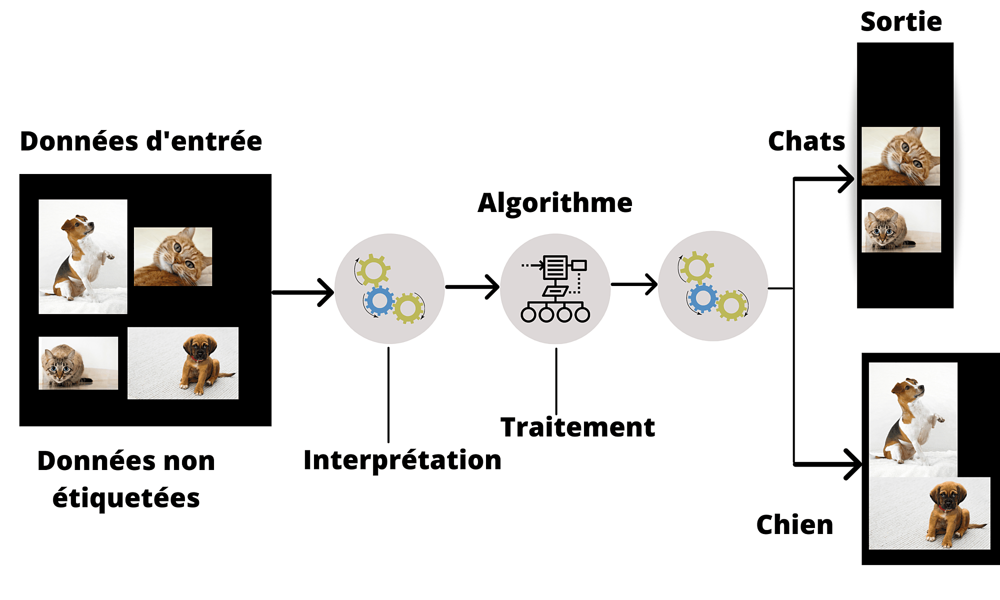
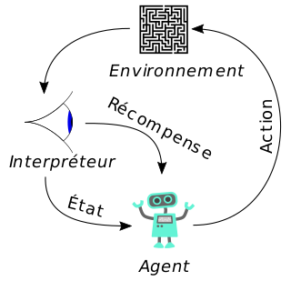
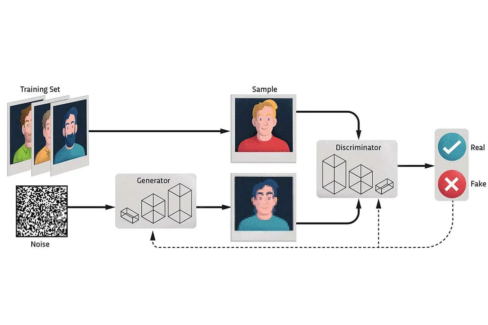
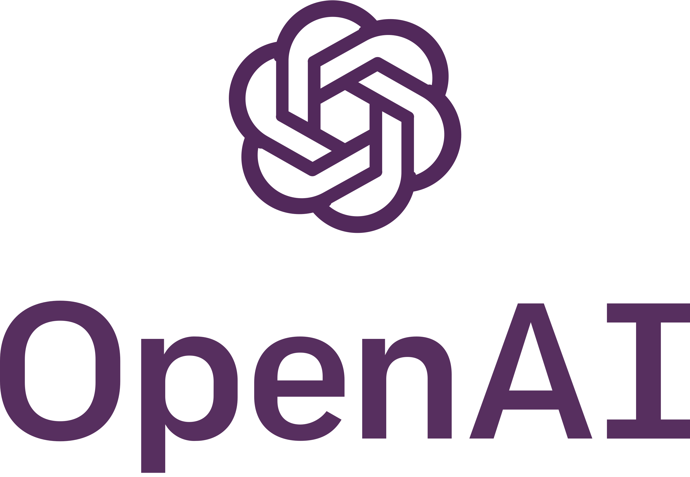
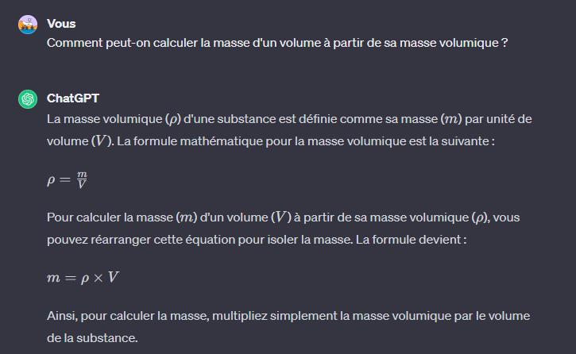
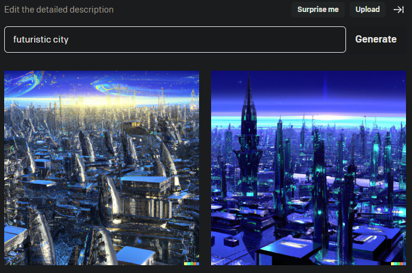

Qu'est-ce que l'IA (Intelligence Artificielle) générative ?
|  | L'intelligence artificielle générative (IA générative) est une branche de l'intelligence artificielle (IA) qui se concentre sur le développement de modèles capables de générer des données nouvelles et originales. L'objectif principal est de créer des algorithmes qui peuvent produire des contenus tels que des images, du texte, de la musique, etc., qui semblent être créés par des humains. |
| Source: synoptek.com | |
Comment fonctionne l'IA générative ?
L'IA générative, qui repose sur des techniques d'apprentissage automatique, explore les modèles et les tendances au sein de divers types de données, tels que du texte, des images, de la musique ou des vidéos. Pour accomplir cette tâche, l'IA générative utilise des informations apprises à partir de différentes approches d'apprentissage machine, notamment l'apprentissage supervisé, non supervisé et par renforcement.Quelques explications sur les méthodes d'apprentissages machine :
L'approche de l'apprentissage superviséL'enseignement guidé est une méthode d'IA où un système est formé à partir de données d'entraînement étiquetées. Ces données sont composées d'exemples d'entrées et de leurs sorties correspondantes. L'IA a pour fonction d'apprendre à associer les entrées aux sorties correctes, et avec le temps, il est capable de prédire la sortie pour de nouvelles entrées. Cette méthode est couramment utilisée dans de nombreuses applications d'IA, comme la détection de spam, la reconnaissance de la parole et la prédiction du temps. |
 |
| Source: kodkodkod.studio | |
L'approche de l'apprentissage non superviséL'apprentissage non supervisé est une autre méthode utilisée en IA. Ici, le système apprend tout seul en découvrant des schémas ou des motifs dans les données qui ne sont pas déjà marquées ou classées. C'est comme si on lui donnait un tas de pièces de puzzle sans l'image de référence, et il doit comprendre comment les pièces s'emboîtent ensemble. C'est différent de l'apprentissage supervisé où on lui donne des exemples précis pour assimiler les choses. |
 |
| Source: kodkodkod.studio | |
|  |
L'approche de l'apprentissage par renforcementL'apprentissage par renforcement est une autre façon dont une IA peut apprendre. Imaginez que l'IA est comme un enfant qui joue à un jeu vidéo pour la première fois. Au début, l'enfant ne sait pas comment jouer et fait beaucoup d'erreurs. Mais à chaque fois qu'il fait quelque chose de bien, il gagne des points (c'est la récompense). Et à chaque fois qu'il fait une erreur, il perd des points ou le jeu devient plus difficile (c'est la punition).Au fur et à mesure qu'il joue, l'enfant apprend quels mouvements lui font gagner des points et quels mouvements rendent le jeu plus difficile. Il commence alors à faire plus de mouvements qui lui font gagner des points et à éviter ceux qui rendent le jeu plus difficile. C'est exactement ce que fait l'IA dans l'apprentissage par renforcement : elle apprend à prendre des décisions qui maximisent ses récompenses. |
| Source: kodkodkod.studio | |
Utilisation des données apprisent :
Ainsi, une fois que ces méthodes d'apprentissage machine ont acquis une compréhension approfondie des modèles et des relations au sein des données, elles peuvent être mises à contribution pour générer de nouvelles données. Ces nouvelles données sont créées en utilisant des techniques avancées telles que les Generative Adversarial Networks (GANs), qui exploitent intelligemment les connaissances accumulées pour produire des contenus originaux et pertinents.Quelques explications sur l'apprentissage générative :
Informations sur les models|  |
L'approche Generative Adversarial Networks (GAN)Les GAN sont composés de deux réseaux neuronaux, un générateur et un discriminateur :• Générateur : Le générateur prend en entrée des données aléatoires (par exemple, du bruit) et génère des données synthétiques, telles que des images, des textes ou d'autres types de contenus. Son objectif est de créer des données qui ressemblent autant que possible à celles d'un ensemble de données réelles. • Discriminateur : Le discriminateur prend en entrée à la fois des données réelles provenant d'un ensemble de données d'entraînement réel et des données générées par le générateur. Son rôle est de distinguer entre les données réelles et les données générées par le générateur. Il cherche à améliorer sa capacité à faire cette distinction au fil de l'entraînement. |
| Source: campus.datacamp.com | |
Les différents types d'IA générative.
| L'intelligence artificielle générative (IA générative) est une branche de l'intelligence artificielle (IA) qui se concentre sur le développement de modèles capables de générer des données nouvelles et originales. L'objectif principal est de créer des algorithmes qui peuvent produire des contenus tels que des images, du texte, de la musique, etc., qui semblent être créés par des humains. | |
| Source: synoptek.com | |
Qui sont les grands acteurs dans le développement des IA générative ?
|  |
OpenAIOpenAI est une entreprise de recherche à but non lucratif qui a pour objectif de promouvoir et de développer une intelligence artificielle amicale pour le bénéfice de l'humanité en tant que tout.Site : openai.com |
| Quelques projets : | |
 Essayer ChatGPT |
ChatGPT :
ChatGPT est un modèle d'intelligence artificielle développé par OpenAI. Il s'agit d'une version
interactive de la famille des modèles GPT (Generative Pre-trained Transformer). Conçu pour la
conversation, ChatGPT est entraîné sur de vastes ensembles de données pour comprendre et générer du
texte de manière cohérente. Les utilisateurs peuvent interagir avec ChatGPT en lui posant des
questions, en demandant des informations, ou en engageant une conversation sur divers sujets. Il
peut générer des réponses en langage naturel basées sur le contexte de la conversation. --> Génération de texte |
|
Essayer DALL-E |
DALL-E :
Ce modèle utilise une approche de réseau de neurones génératifs pour créer des images à partir de
descriptions textuelles. Contrairement à d'autres modèles qui génèrent des images réalistes à partir
de données existantes, DALL-E est capable de créer des images entièrement nouvelles en fonction des
concepts fournis en langage naturel. Il a été particulièrement remarqué pour sa capacité à générer
des images créatives et originales en réponse à des instructions textuelles. --> Génération d'image |
| Exemples d'utilisation :

 |
|